Hydrologic & Hydraulic Modeling
Process-based simulation, flood routing, inundation mapping, model calibration, and large-domain water system evaluation.
Hydrology • Climate Extremes • AI for Water Systems
Water resources scientist working at the intersection of hydrologic modeling, flood prediction, remote sensing, climate risk, and AI-assisted environmental analysis.


About
I am a researcher at the Hydrometeorology and Remote Sensing Laboratory at the University of Oklahoma, with a background in environmental engineering, water resources, climate impacts, and applied economics.
My work combines physics-based hydrologic and hydraulic models, remote sensing, large-scale environmental datasets, and AI-assisted workflows to improve flood prediction, climate-risk assessment, and water-hazard preparedness.
Milestones Ph.D., Environmental Engineering — University of Oklahoma


Research Areas
Process-based simulation, flood routing, inundation mapping, model calibration, and large-domain water system evaluation.
Machine learning, AI-assisted modeling workflows, flood prediction, parameter estimation, and scalable data processing.
Climate-driven flood and drought hazards, future scenario analysis, and regional water-resource vulnerability.
Large-scale raster and NetCDF workflows, precipitation and temperature datasets, regridding, validation, and spatial analytics.
Interdisciplinary assessment of climate extremes, water resources, renewable energy, agriculture, and economic impacts.
Transforming scientific models into practical tools for emergency response, planning, infrastructure, and resilience decisions.
Selected Projects
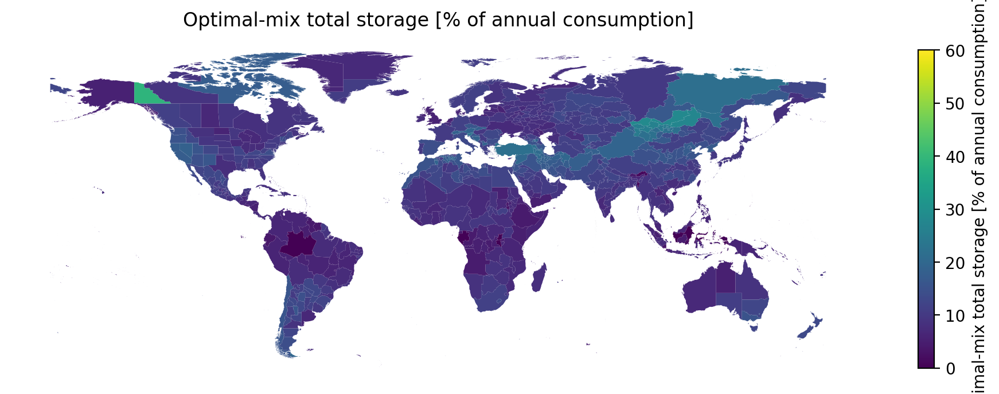
An interactive map of 770 regions worldwide — click any region for its optimal solar/wind mix, storage requirement, and supply-vs-demand charts. USA states add real-units results (TWh, nameplate, land-use feasibility) from real EIA consumption. Preliminary, unpublished research.
Explore the interactive atlas →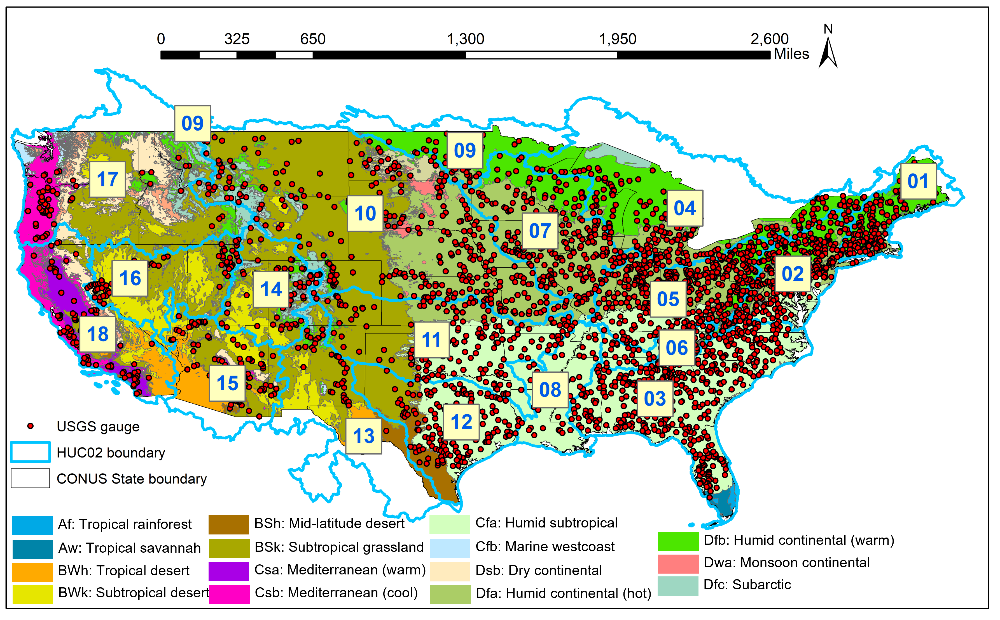
An interactive map of ~9,000 USGS streamgauges, color-coded by CREST hydrologic-model skill (NSCE) over the contiguous US. Click any gauge for its metrics and an interactive Water-Year-2019 hydrograph; select by point, HUC8 basin, or rectangle and download the simulation data. Based on published research.
Open the parameter downloader →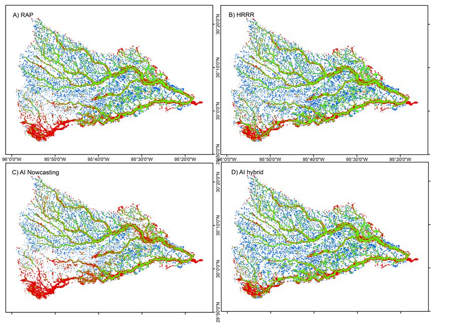
A comprehensive flood inundation mapping of Hurricane Harvey using an integrated hydrologic and hydraulic model.
Read paper · J. Hydrometeorology, 2021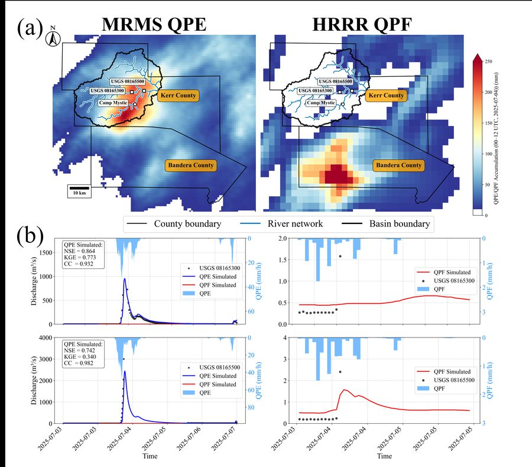
Evaluating flood predictability of CREST-iMAP driven by quantitative precipitation forecasts and deep-learning (U-Net) precipitation nowcasts.
Read paper · J. Hydrology, 2022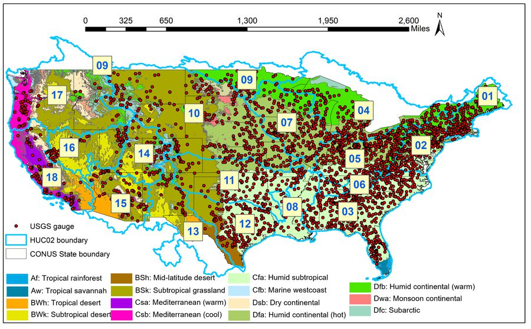
Large-scale hydrologic model calibration and evaluation across the contiguous United States to support water-resource and flood-risk applications.
Read paper · J. Hydrology, 2023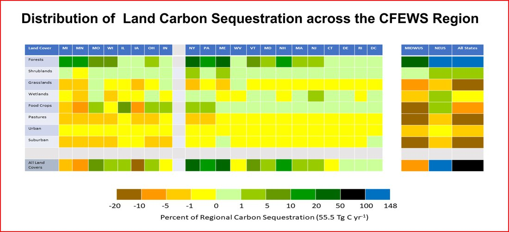
Interdisciplinary modeling of climate extremes and their impacts across water resources, agriculture, renewable energy, and economic systems.
Read paper · Frontiers in Env. Science, 2023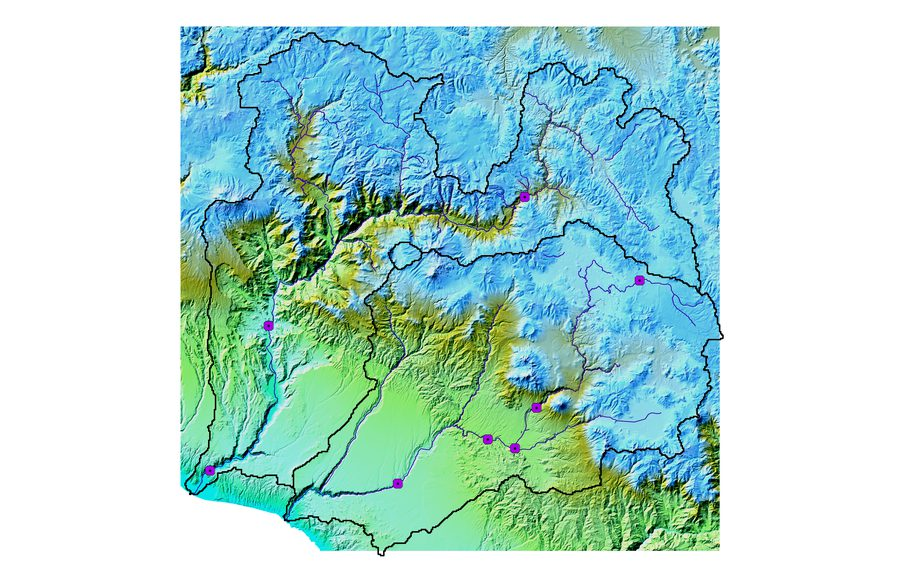
Hyperresolution regional climate modeling and CREST-VEC simulations under SSP5-8.5 to assess flood, drought, and water-resource risk in the arid Peruvian Andes.
Read paper · Am. J. Water Resources, 2025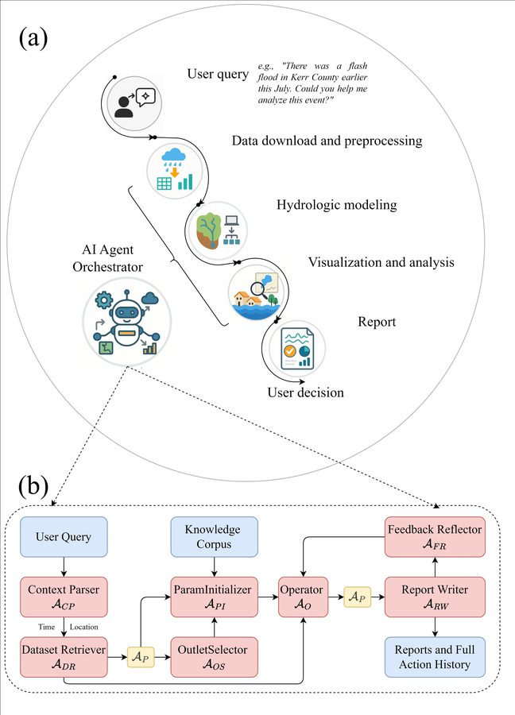
A language-based, vision-enabled agent that takes a natural-language prompt and autonomously retrieves data, configures and runs a hydrologic model, and writes a report.
Read paper · arXiv, 2025Community & Field
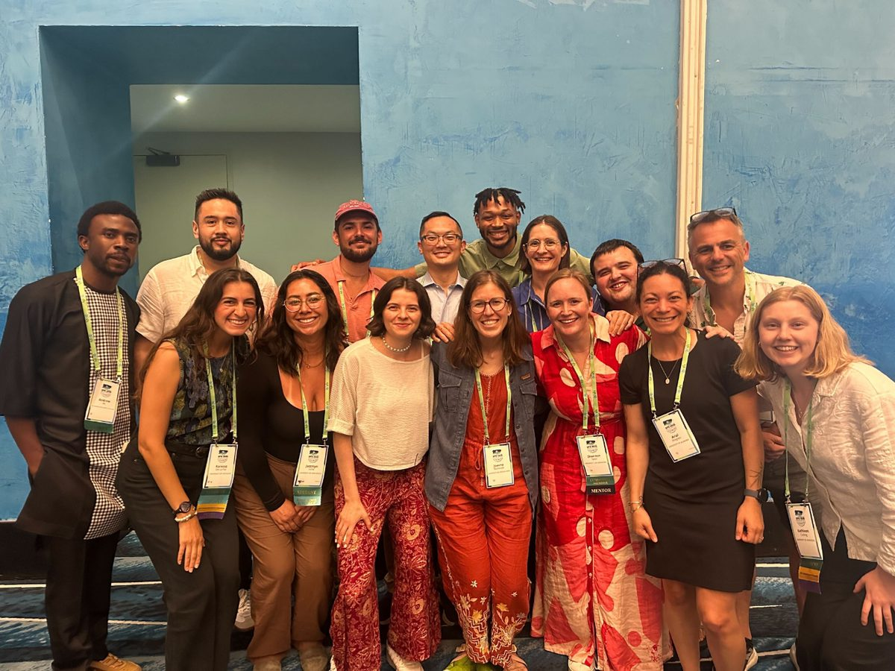
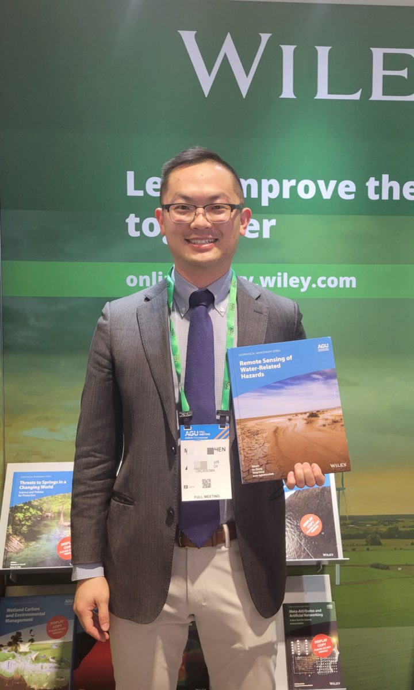
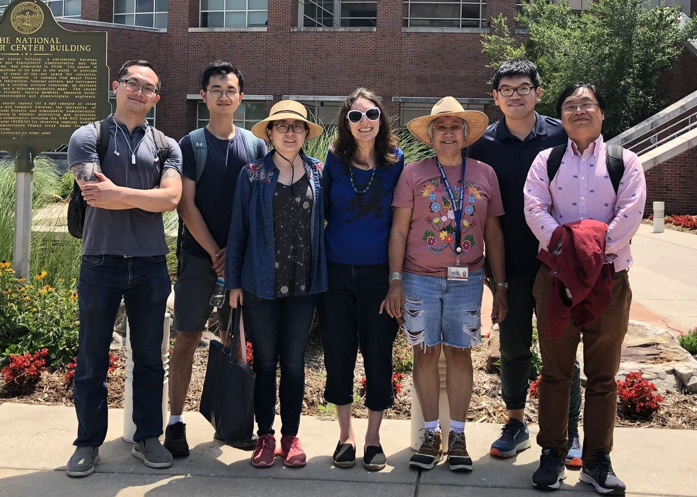
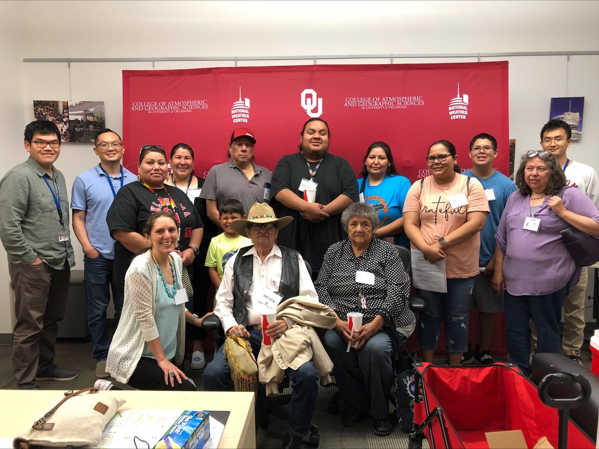
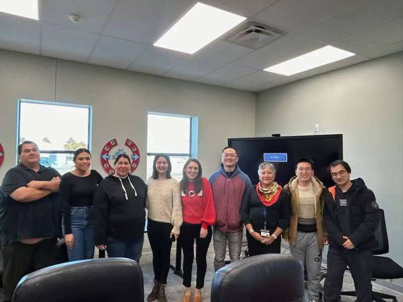
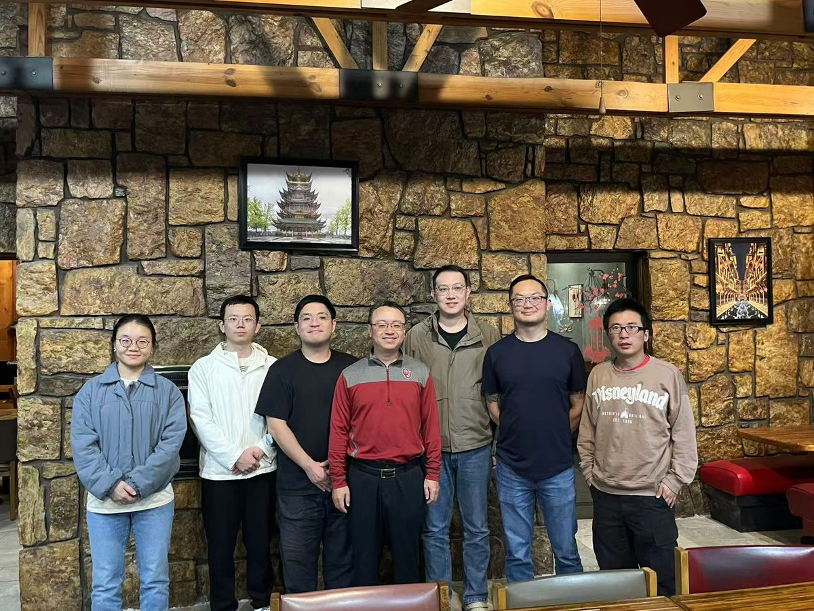
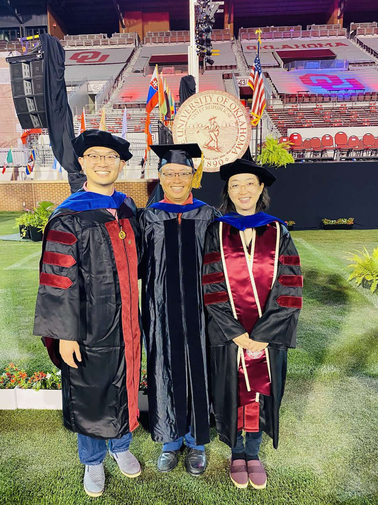
Publications
See the full, up-to-date list on Google Scholar.
CV
University of Oklahoma
University of Oklahoma
University of Oklahoma
University of Oklahoma
University of Illinois Urbana-Champaign
Pennsylvania State University
Contact
I am interested in research, applied AI, climate-risk modeling, environmental data science, flood prediction, and decision-support systems for water and climate resilience.